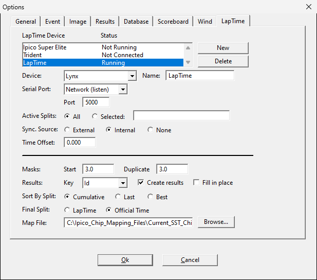
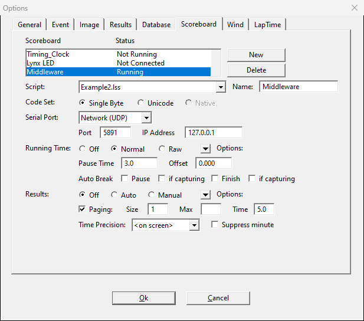
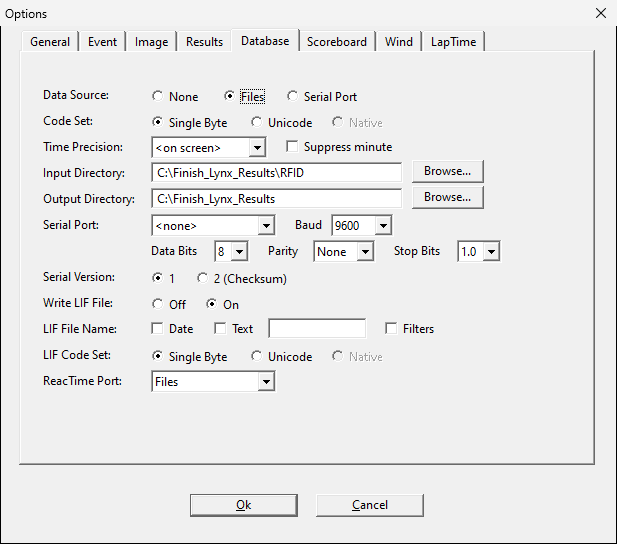
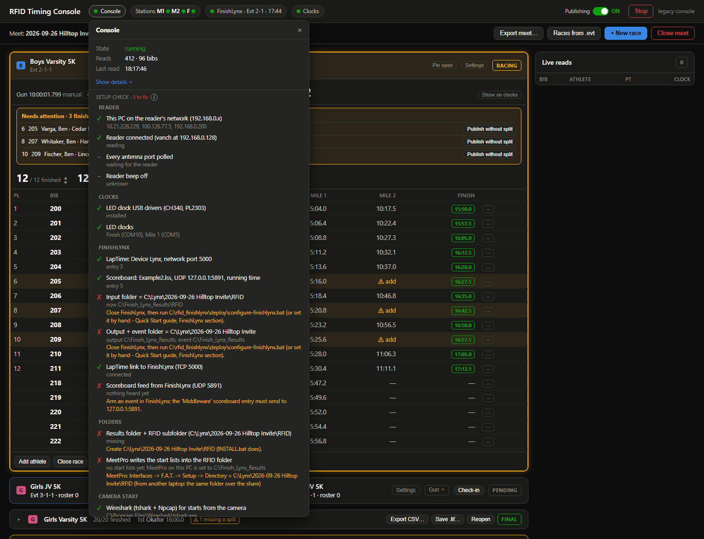
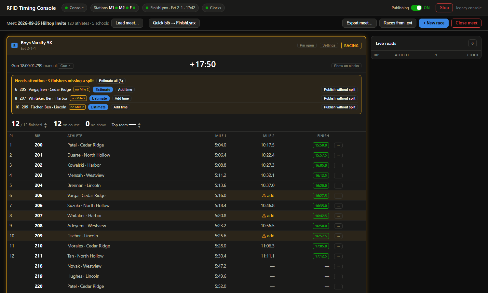
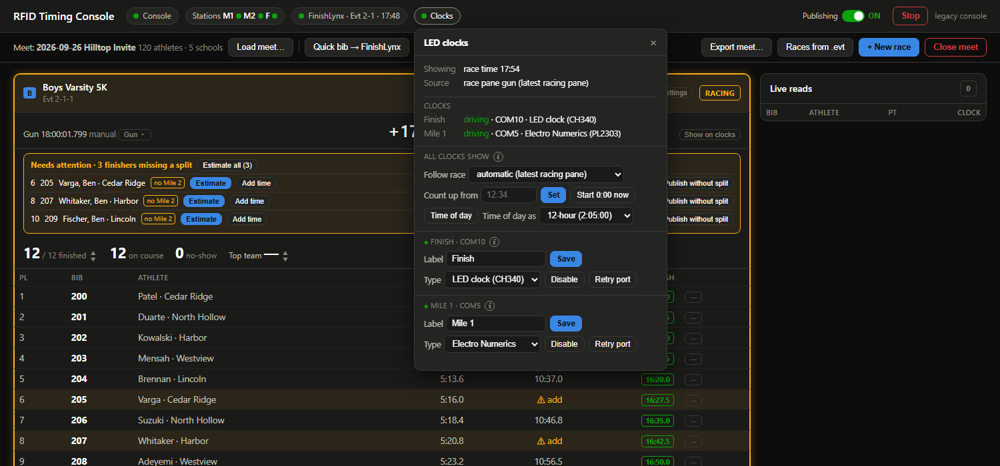

RFID Timing Console · Quick Start
Set up a Windows timing PC so the RFID mat, the LED clocks, FinishLynx and MeetPro work together. Plan on 20 minutes the first time, with FinishLynx and the reader at hand.
- What you need
- Install
- Network
- FinishLynx settings
- MeetPro settings
- Check it: Setup check
- Meet day
- When something is wrong
- Addresses, ports and folders
1What you need
- A Windows 10 or 11 PC (64-bit) you can log in to as an administrator once.
- FinishLynx with the LapTime plug-in installed on that PC.
- The Vanch RFID reader (VF-747P or VF-787P) with its antennas, power supply and a network cable into the same switch as the PC and the FinishLynx camera.
- Optional: the LED clocks on their USB-serial cables (CH340 = LED clock, PL2303 = Electro Numerics).
- Optional: MeetPro, on this PC or on another laptop that can reach this PC's C:\Finish_Lynx_Results folder over the network.
- Optional: Wireshark (free), so the console hears the start sensor through the camera.
- The package: rfid-finishlynx-<date>-<version>.zip.
2Install
- Unzip the package anywhere (Desktop or a USB stick is fine). Right-click the zip, Extract All… Do not run it from inside the zip.
- Open the extracted rfid_finishlynx folder and double-click INSTALL.bat.
- If Windows says "Windows protected your PC": click More info, then Run anyway. Accept the administrator prompt.
- The installer works through 9 steps. It needs no internet. Answer its questions:
It asks Answer Open Network Connections now to set it Only shown when the PC is not on the reader's network: Y, then see Network. Open the Wireshark download page now Y if you want starts from the camera. Install Wireshark with Npcap ticked. N is fine: you then set guns from the race pane. Change FinishLynx's settings now Close FinishLynx first, then Y. It sets everything in section 4 for you and keeps a backup. N if you prefer to set them by hand. - At the end the console starts and the browser opens http://localhost:8080. An RFID Console shortcut is on the Desktop, and the console starts by itself every time you log in.
Updates come through the same section: Update now appears when there is a newer version (the PC needs internet for that moment). Your settings, races and results are kept. Running a newer package's INSTALL.bat still works too.
3Network
The reader, the FinishLynx camera and this PC must be on the same wired network, 192.168.0.x:
| Device | Address |
|---|---|
| RFID reader (factory setting) | 192.168.0.128 |
| This PC's wired adapter | 192.168.0.200, mask 255.255.255.0, no gateway |
| FinishLynx camera (typical) | 192.168.0.201 |
If your camera network already uses 192.168.0.x, nothing to do. Otherwise set the PC's address: Win+R,
type ncpa.cpl, right-click the wired adapter, Properties → Internet Protocol Version 4
(TCP/IPv4) → Use the following IP address.
The console finds the reader by itself, polls every antenna port it has, and turns the reader's beep off each time it connects: nothing to set on the reader.
4FinishLynx settings
Easiest: close FinishLynx and run C:\rfid_finishlynx\deploy\configure-finishlynx.bat (the installer offers the same). It shows what is wrong, changes only that, and saves a backup Lynx.cfg.before-rfid-<date> next to FinishLynx's settings. Open FinishLynx afterwards and check the screens below. To set them by hand:
All three are tabs of one Options dialog. Press Ok at the end to keep them.
4a. LapTime: RFID reads into FinishLynx
- FinishLynx menu LapTime → Options… (the LapTime plug-in must be installed).
- New (or pick the entry you use) and set Device: Lynx. Not IPICO, not BibLynx: those silently ignore the console.
- Serial Port: Network (listen), Port 5000. Sync. Source: Internal.

4b. Scoreboard: event, heat and race clock back to the console
- Menu Scoreboard → Options…, New, Name Middleware.
- Script: Example2.lss. Serial Port: Network (UDP), Port 5891, IP Address 127.0.0.1.
- Running Time: Normal (this is how the console learns the gun from FinishLynx). Results: Off.

4c. Folders
Menu File → Options…:
| Tab · setting | Folder | Why |
|---|---|---|
| Database · Input Directory | C:\Finish_Lynx_Results\RFID | MeetPro writes lynx.evt / .ppl / .sch here |
| Database · Output Directory | C:\Finish_Lynx_Results | FinishLynx saves its .lif files here (Write LIF File: On) |
| Event · Event Directory | C:\Finish_Lynx_Results | same folder |

5MeetPro settings
- MeetPro: Interfaces → F.A.T. → Setup.
- Directory = C:\Finish_Lynx_Results\RFID. From another laptop: the same folder over the network (share the timing PC's C:\Finish_Lynx_Results folder).
- Leave Don't Write Start Lists unticked. Export start lists as usual; they land in the RFID folder.
- For splits in MeetPro, use Splits Auto-Pull; for MileSplit Live during the race, Start MS Live Sync on the XC tab.
6Check it: Setup check
Open the console (http://localhost:8080 or the Desktop shortcut) and click the Console chip at the top left. Its Setup check lists everything above: ✓ is fine, ✗ needs fixing and says how, – does not apply yet (for example, no clock plugged in). Check again after each fix.

Some rows only turn green once things are running: the LapTime link when FinishLynx is open, the scoreboard feed once an event is armed, the camera once FinishLynx talks to it.
7Meet day

- Power up the reader, clocks and FinishLynx. The console starts by itself at login.
- Load meet… → Load. It reads the athletes MeetPro exported.
- Races from .evt: tick the races the mat will time, Add selected.
- Click Check-in on the next race.
- The gun arms the race by itself (camera start or FinishLynx's clock). Otherwise open the race's Gun ▾ and pick the start or Gun = now. The LED clocks follow the running race.
- Finishers appear as they cross. Needs attention lists anyone missing a mile split: Estimate, Add time or Publish without split.
- Close race when the last runner is in. The clocks go back to the time of day.
- After the meet: Export meet… for a CSV, then Close meet (archives everything, then clears the console for the next meet).
The chips
| Chip | Click it for |
|---|---|
| Console | Setup check, restart, Update now, Send logs. |
| Stations | The reader: ⚙ Reader… for antenna ports and power; where each mat stands (Finish, Mile 1…). |
| FinishLynx | LapTime link, scoreboard feed, camera start. |
| Clocks | Each LED clock; Time of day, count-up, 12/24-hour. |

8When something is wrong
| You see | Do |
|---|---|
| Stations chip red / "Reader offline" | Reader power and network cable; PC on 192.168.0.x (section 3). The console reconnects by itself. |
| Reads in the console, nothing in FinishLynx | FinishLynx LapTime Device must be Lynx on port 5000; an event armed and started. |
| LED clock dark | Setup check → clock drivers. If FinishLynx's own scoreboard list has an entry on that clock's COM port, FinishLynx holds the port: remove that entry or pick a different clock. |
| Clock shows the wrong thing | Clocks chip → Back to auto. |
| Gun not picked up | Race Gun ▾ → pick the start or Gun = now. For camera starts: Wireshark installed, FinishLynx open. |
| MeetPro shows no splits | MeetPro's F.A.T. directory = the RFID folder (section 5). |
| Console page does not load | Double-click the Desktop RFID Console shortcut, then reload the page (F5). |
| After an update, buttons look old | Reload the page (F5). |
| The new version misbehaves | Console chip → Roll back. If it will not even start, it goes back to the previous version by itself after three tries. |
| Anything else odd | Console chip → type what happened (with the time) → Send logs. Do it the same day: the logs keep two weeks. |
9Addresses, ports and folders
| What | Value |
|---|---|
| Console web page | http://localhost:8080 |
| FinishLynx LapTime (console → FinishLynx) | TCP 5000, Device Lynx |
| FinishLynx scoreboard (FinishLynx → console) | UDP 127.0.0.1:5891, Example2.lss |
| Reader | 192.168.0.128 (Modbus TCP 502, UDP 1969) |
| Install folder | C:\rfid_finishlynx (settings: config.yaml, log: rfid_timing.log) |
| FinishLynx results | C:\Finish_Lynx_Results |
| MeetPro ↔ console | C:\Finish_Lynx_Results\RFID |
| Closed meets (archive) | C:\rfid_finishlynx\closed-meets |